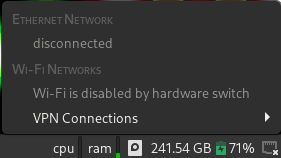

The Downfall of Sensible Technology
A troubling trend that has been apparent in the last decade is the increasing lack of sensible designs in the technology we use.
Giant touchscreen cell phones
Since around the early 2010's, "smart" cell phones have been dominating and making the not-so-smart phones of yesterday, and smartphones that are only a couple years old seem dated and undesirable.
I actually prefer dumb phones in 2022. Nice and responsive tactile buttons and UI, not too big, no addicting/distracting push notifications, long battery life since it is in standby most of the time, a removable battery and some are more rugged and comfortable than those fat Otterbox cases. The iPhone and its consequences have been a disaster for the human race, making us hooked on dopamine, distracting us from what we could be doing instead of endlessly scrolling through social media.
I would say that smartphones were better in the early 2010's than today. I would take an iPhone 4s with iOS 6 over any modern smartphone any day. The sizes of smartphone screens then were perfect for comfortable use in one hand, but they just had to keep making them bigger starting with the release of the iPhone 6, and that's the awful norm now. Does a single cell phone need to have four cameras on the back? One for you, one for the FBI, one for the NSA, one for the CIA.
Unfortunately, it has become harder to have a good cell phone in 2022. Not a lot of flip phones and dumb phones are made anymore, and the old ones can no longer be used with the deprecation of the old 1X and 3G networks.
Modern laptop designs
Thin laptop designs are pretentious, sacrificing functionality and serviceability for lower manufacturing costs and planned obsolescence, because money talks. My ThinkPad Yoga 260 that I got new in 2017 needs a proprietary dongle for Ethernet, needs the entire bottom cover to be taken off to get at all the components with connectors that are too tiny, and it will probably be dust by 2030 because of how much more easily it breaks down.
Do people really not see the problem with thin designs? The keyboards have to be so thin that they are a pain to type on with such little key travel. Needing dongles for things with large ports means more must be carried with the laptop. The cooling is worse since the air intake is on the bottom, where there is less air flow than the sides. Using a 360 degree hinge means resting the keyboard on the surface instead of the laptop's bottom, covering the keyboard in filth from said surface.
Most average laptop designs these days have no physical buttons for clicking, and expect the user to always click with the trackpad. I find pressing down on the trackpad painful. It's so much better to click with a physical button, especially when holding it down to drag things on the screen.
A useful feature in old laptops was wireless kill switches, not just for privacy but making sure you don't accidentally connect to an unintended network or device. I heard that wireless kill switches were taken because too many novice users would take their laptops to repair shops thinking the WiFi was broken, when really the switch was off. Instead of taking a useful feature, why not actually tell the user that they need to flip the switch, like the NetworkManager applet does:

Status LED's are useful as well. I heard an argument that the disk activity light is not necessary because of the speed of modern SSD's, but it's still useful for telling if a program is frozen when loading, if software just has a stupid placebo delay for loading, or if a piece of malware could be digging through your file system. When you're not voluntarily using the internet, a network activity light could help tell if there is maybe spyware on your system. A battery LED changing color will always let you know when the battery is low, even when there is no indication on the screen or warning sound. Transparency is important!
See also: